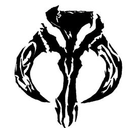

Home
Contact Me
|  |
Rockne Matsuda Jr.
Senior Versatile Technologist at the Boeing Co.
Contact Me
|
I am a Senior Systems Administrator (Versatile Technologist) at the Boeing Company.
I'm an 8-year Air Force Veteran and served the majority of my career within the Air Foce
Special Operations Command at Fort Bragg, NC. I have around 10-years of experience with Information
Technology Systems to include Routing & Switching, Server Administration (Windows/Red Hat Linux), and
User Support. I completed my Bachelor's in Computer Networks and Cybersecurity at the University of
Maryland. I am starting to learn full stack web development.
Education
Hobbies
- Spending time with my family
- Reading Biographies on Successful Leaders
- Studying Full Stack Web Development
Work Experience
Technological Skills
| Cisco Routing & Switching |
⭐️⭐️⭐️ |
| Red Hat Enterprise Linux 5/6/7/8 |
⭐️⭐️⭐️⭐️ |
| Windows 7/10 Server 2008/2012/2016 |
⭐️⭐️⭐️⭐️ |
| GIT |
⭐️⭐️⭐️ |
| Puppet |
⭐️⭐️⭐️⭐️ |
| Ansible |
⭐️⭐️⭐️⭐️ |
| Python |
⭐️⭐️⭐️ |
| Front End Web Development |
⭐️⭐️⭐️ |
| Dell EMC |
⭐️⭐️⭐️ |
| NetApp |
⭐️⭐️⭐️ |
| Security Patching |
⭐️⭐️⭐️⭐️ |
| KG Encryption Devices |
⭐️⭐️⭐️⭐️ |
Certifications
- CompTIA Network + CE
- CompTIA Security + CE
- Red Hat Certified Systems Administrator